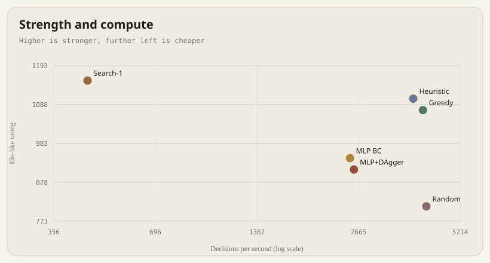
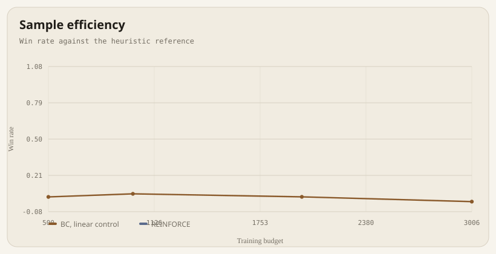
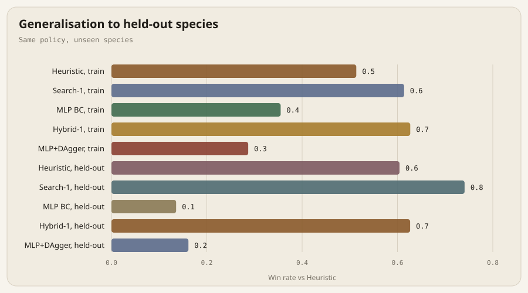

A deterministic Pokémon battle benchmark.
A 24-species, 3v3 singles engine with fixed seeds, side-swapped matches, bootstrap intervals, held-out species, and a failure log. Zero runtime dependencies.
- Best agent
- Search-11153 Elo
- Search-1 vs heuristic
- 69.5%497 decisions/s
- Search-2 oracle
- 90.0%31 decisions/s
- Engine throughput
- 7302decisions/s, fastest match
Leaderboard
Bradley-Terry strength from side-swapped round-robin play. Intervals are 95% percentile bootstrap intervals over decisive games; draws are reported but excluded from the denominator.
| Agent | Elo | W-L-D | Win rate | 95% CI | Decisions/s |
|---|---|---|---|---|---|
| Search-1 | 1153 | 429-158-13 | 73.1% | [69.3, 76.7] | 445 |
| Heuristic | 1104 | 392-204-4 | 65.8% | [61.9, 69.6] | 3827 |
| Greedy | 1073 | 363-230-7 | 61.2% | [57.3, 65.1] | 4078 |
| MLP BC | 943 | 242-348-10 | 41.0% | [37.1, 44.9] | 2519 |
| MLP+DAgger | 913 | 214-375-11 | 36.3% | [32.6, 40.2] | 2585 |
| Random | 813 | 134-459-7 | 22.6% | [19.4, 26.1] | 4171 |
The six-agent round robin uses 120 games per pair and one shared team schedule. Search-2 is a separate 100-game oracle match.
Strength and compute
A point on the right is cheaper. Search depth is the strongest lever; distillation buys throughput at a measurable strength cost.

Learning
The linear behaviour clone is a negative control. The non-linear MLP reaches 41.0% overall in the round robin; the linear model does not learn a useful ranking.
| Stage | Budget | Win rate |
|---|---|---|
| BC, linear control | 500 | 3.8% |
| BC, linear control | 1000 | 6.2% |
| BC, linear control | 2000 | 3.8% |
| BC, linear control | 3006 | 0.0% |

Generalization
Policies train on 18 species and are tested on six they never see. Search transfers; the small MLP does not.
| Agent | Train species | Held-out species | Delta |
|---|---|---|---|
| Heuristic | 54.1% | 63.6% | +9.6 pp |
| Search-1 | 64.6% | 78.0% | +13.4 pp |
| MLP BC | 37.4% | 14.3% | -23.1 pp |
| Hybrid-1 | 66.0% | 66.0% | -0.0 pp |
| MLP+DAgger | 30.2% | 17.0% | -13.2 pp |

Reproduce
The engine, agents, report, and charts use the Python standard library. PyTorch is optional and used only to train the MLP; inference is exported to JSON.
python -m pokerl verify
python -m pytest
python -m pokerl bench --games 120 --seed 2025
python -m pokerl generalize --games 100 --seed 2025
python -m pokerl reportEvery result file records the git SHA, Python version, platform, seed, and a config hash.